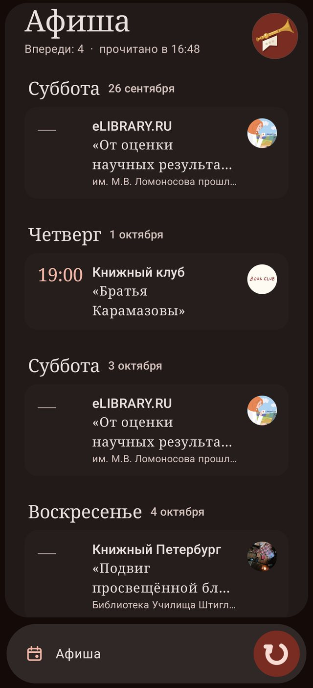
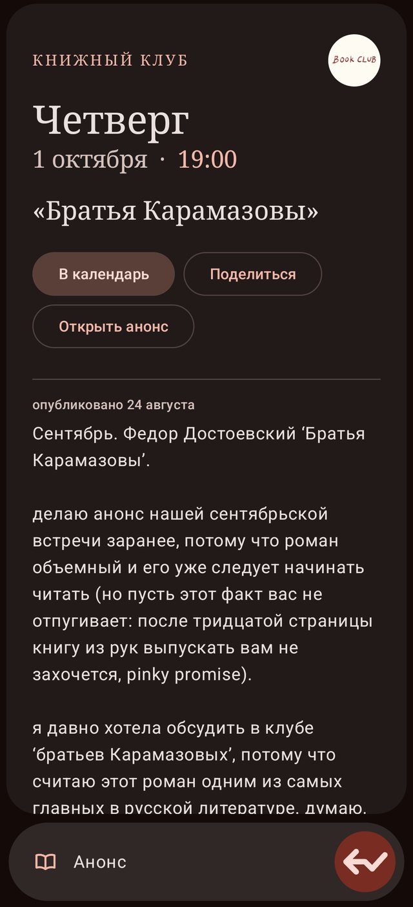
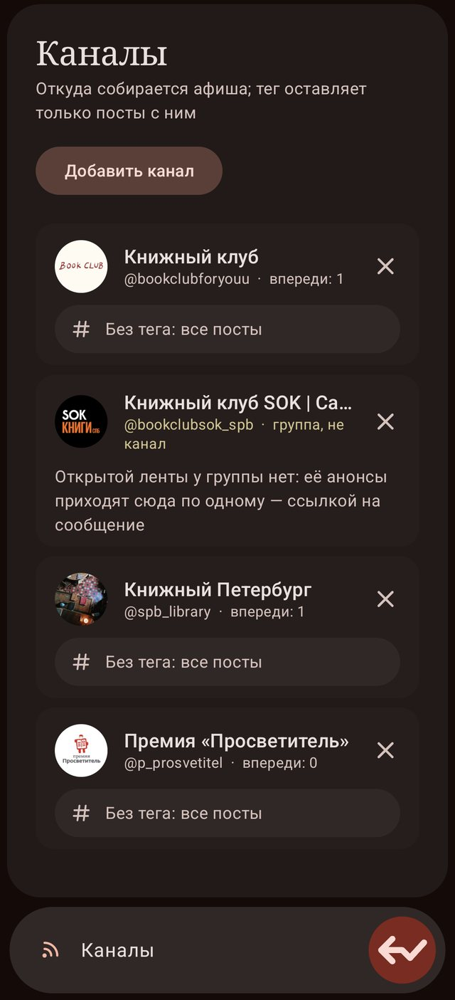

Fama · v0.3.0 · Android board of meetings
What the channels announce, on one board.
Android 8+ · ~130 KB · no libraries · sideload
What it is for
A reading club posts its next meeting in its own channel, a library in another, a bookshop in a third. Nobody follows thirty channels to find out what is on this week.
Share a channel to Fama once, and whatever it announces stands on one board, by day and by hour, with the book and the place. The board reads the channels again when it is opened after half an hour, and new meetings come in while it is looked at. A meeting whose day has passed leaves by itself.
Tap a card and the announcement opens in place, in the board’s own type, its links live, including the ones hidden under words. One more tap hands it to the phone’s calendar, filled in.

How it reads
A day still ahead is the spine of an announcement. On it the other witnesses add their weight: a word that calls people together, the channel’s own tag, an hour, a place, a title in quotes. A post that calls nobody and carries no tag has to bring everything at once, so a sale that ends on Friday is not a meeting.
The twenty-seventh of September, 27.09, this Saturday, next Saturday, tomorrow, three Thursdays of one month in one line — all counted from the day the post was written, not from today.
Typos by the length of the word, two letters swapped, a picture glued to a word, the wrong keyboard layout, a letter held down too long.
The words that call and the words that turn a post away stand as a cloud, each as large as the number of announcements it found at the last reading — the ones doing the work in front, the idle ones small and pale. Switch a word off, or add one of your own: a phrase like master class is read as a phrase, and strictly, so an evening does not start meaning every good evening. The channels are read again at once, and the board says what the change did.
A meeting called off stays on the board, crossed through; a moved one is marked. The later post that said so is set above the announcement, in the channel’s own words.

Where it reads from
A public Telegram channel keeps a page that anyone can open without an account. Fama reads that page — on the phone itself, over whatever network the phone has — and nothing else. A group’s talk has no such page; one message from a public group comes in by its own link.
Fama signs in nowhere. A bot sees only the channels whose owners let it in, and needs a server that someone runs, pays for and answers for. An application that signs into a messenger holds the key to every chat on the account. A login form inside someone else’s application looks exactly like phishing, however honest the application is. Networks that show their pages only to those who have signed in stay outside; an announcement from there can still be shared in by hand, as text, and it stands on the board like any other.
Any text that names several channels — a list pasted from a note, a message, a file — adds them all with one tap. The whole board travels as one text too: the channels with their tags, the meetings sent by hand, what was taken off, and the colour. Share it to another phone, or keep it in a file.

The name
Fama is Latin for what is said of a thing: report, rumour, and fame. In Virgil she has as many tongues as feathers and runs through the city telling what has happened, and the painters give her a trumpet. Here she tells only what the channels themselves announce.
The mark is a herald’s trumpet with a banner under it, on Pompeian red. The gold ball on its shaft was once the one lit day on a calendar leaf; the banner is that leaf, cream with a dark band and three quiet dots.
Words
The interface speaks English on its own. Russian travels inside as a module and is taken up by itself on a phone set to Russian. Any other language is a module too — one text file, filled in any editor and loaded in the settings.
The announcements themselves are read in Russian for now: the words for meetings, days, months and places live in a text file beside the code. English announcements, with their hours given in other time zones, are next.
How it is made
No Gradle, no Android Studio, no dependency resolution, nothing downloaded at build
time. Java compiled against android.jar, packed and signed by hand.
Written on a phone, in conversation.
aapt package -f -m -J gen -M AndroidManifest.xml -S res -I android.jar javac -source 8 -target 8 -classpath android.jar -d cls $(find src gen -name "*.java") dalvik-exchange --dex --min-sdk-version=26 --output=classes.dex cls zipalign -f 4 base.apk fama.apk && apksigner sign --ks <key> fama.apk
The decisions are the author’s: no server, no sign-in, what counts as an announcement, which doors stay shut. The code, the mark and the words of the interface were written against those decisions by Claude, and read before they shipped. The reading of announcements is tried on a desktop against real posts and invented ones before every build.
Permissions
Internet — to open the public pages of the channels you added, and their pictures. Nothing else.
No account, no server, no telemetry. The board, the list of channels and the journal stay on the phone.
The APK is signed with one key. Its certificate’s SHA-256:
CB:58:BA:68:06:24:A2:1D:C0:6C:8A:7E:6B:E8:78:C1:A2:0A:9A:72:27:F3:34:B7:0F:03:A3:79:38:14:AA:33